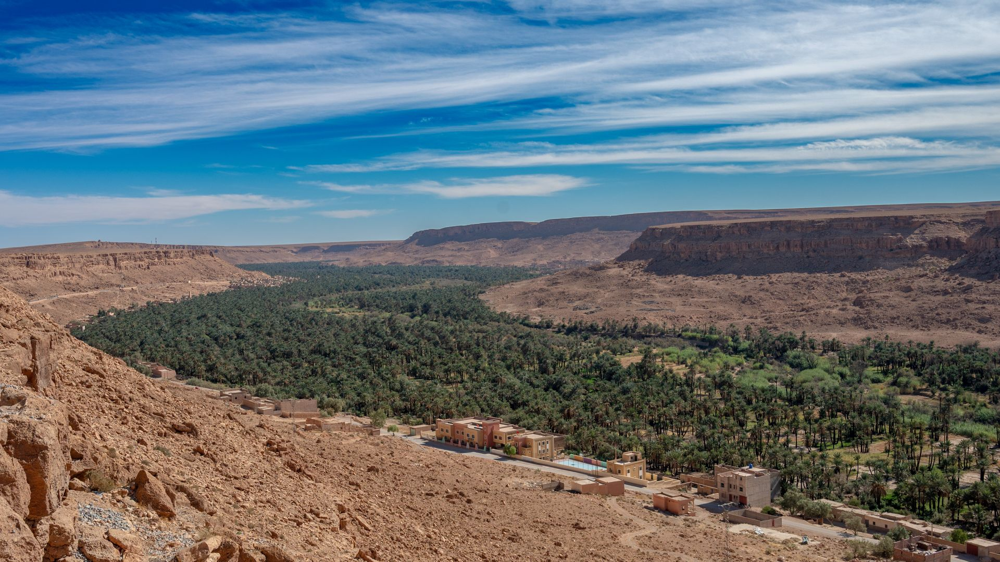

Il più vicino a Merzouga
Le dune di Erg Chebbi sono a circa 2 ore.

Tour privati · Errachidia
Errachidia, con l’aeroporto Moulay Ali Cherif, è la città più vicina alle dune del Sahara di Merzouga. I nostri tour privati da Errachidia seguono i palmeti della Valle dello Ziz fino a Erg Chebbi in circa due ore — 3 o 4 giorni, con escursione in cammello e una notte in un campo tendato.
2 tour
Le dune di Erg Chebbi sono a circa 2 ore.
Uno dei palmeti più grandi del Marocco.
Il massimo del Sahara in soli 3 giorni.
Prosegui verso Marrakech dopo il Sahara.
Circa 130 km, più o meno 2 ore in auto attraverso la Valle dello Ziz ed Erfoud.
Sì, Errachidia ha un aeroporto nazionale (Moulay Ali Cherif); il tuo autista privato ti accoglie all’arrivo.
Sì, il tour di 4 giorni da Errachidia passa per Merzouga e termina a Marrakech.
Raccontaci date e desideri — rispondiamo in meno di 24 ore con un itinerario personalizzato.